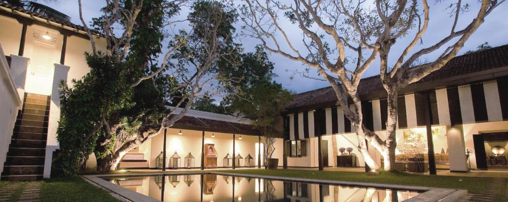

Tri
Koggala, Sri Lanka "Set on a hillside overlooking SriLank's largest natural lake, Tri's ll suites offer real tranquility spread out amidsta garden of banyan trees and frangipani. The design, complete with a cinnamon clad water tower imbued with a sense of place, sits harmoniously within the surrounding nature."
|
Rosyth Estate House
Kegalle, Sri Lanka "It's not every day you stay in a colonial tea planter's bunglow dating back to 1926; everything about Rosyth Estate House evokes a sense of time and place. This is a place to slow it down, drink tea (or G&Ts) on the veranda, watch the mist rise above the hills and enjoy delicious Sri Lankan dishes."
|
Jetwing Vil Uyana
Sigiriya,Matale District Sri Lanka "Absorbed within flourishing man-made wetlands teeming with wildlife, this superb eco hotel with spa in Sri Lanka's most successful eco-tourism intiative. The 36 freestanding dwellings(some with pools) set in five distinct habitats offer loads of space and plenty of comfort"
|

Paradise Road the Villa Bentota
Bentota, Southern Province, Sri Lanka "This inspiring boutique hotel in west coast Bentota is a romantic playground for artists, aesthetics and foodies, with stylish rooms extensive lawns, a lap pool, and beach beyond."
|
The Sandhya
Ahangama, Sri Lanka "A design-focused nine- bedroom boutique hotel at the heart of surf - orientated Kabalana Beach, Whose cube - like glass-fronted design stands out for this individuality and chi contemporary detailing"
|
Amanwella
Tangalle, Hambantota District, Sri Lanka "Amanwella's pristine banana-shaped bey is easily one of Sri Lanka's most scenic. Despite occupying most of its 800-metre beachfront, this ontemporary hotel tourts just 27 suites, which are so spacious and serene guests are rarely seen round the resort."
|